STEP 02 / つくるためのヒント
会場の奥から、文字が読めるか。
- 01 / 映すものスライド・紹介動画
- 02 / 組み合わせ画面 ＋ 素材を送る機器
- 03 / 当日の担当登壇・上映の順番に合わせて操作
登壇者の資料、紹介動画、リモート登壇者の顔。
こんなこともできます:
EQUIPMENT RENTAL / 映像機材レンタル
何を、映そう。
東京の LOTUS VISUAL が、機材選びから
設営・本番の映像操作まで支えます。
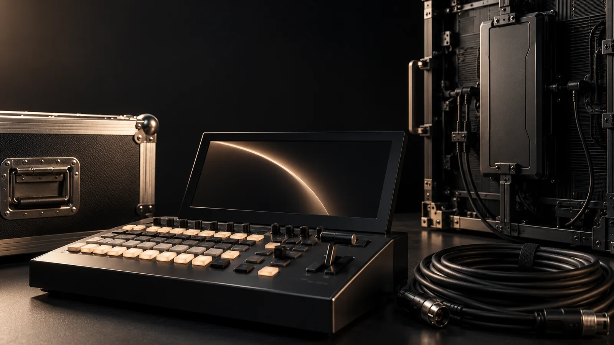
STEP 01 / つくりたい場面を選ぶ ↓
迷ったら: 発表会のあとに懇親会、展示の中にステージ——場面が混ざる案件は そのまま相談 してください。分け方から一緒に考えます。
STEP 02 / つくるためのヒント
登壇者の資料、紹介動画、リモート登壇者の顔。
こんなこともできます:

STEP 02 / つくるためのヒント
ループ映像、会場案内、ブランドの色と動き。
こんなこともできます:

STEP 02 / つくるためのヒント
歌詞、カメラの映像、演出のきっかけに合わせた切り替え。
こんなこともできます:
6m×3m の LED には、
光の粒が約 265 万個。
光の粒を 2.6mm 間隔で並べた場合の数です。
その一粒ずつを、そろえて光らせる。
LED から操作卓まで、110 機種。
役割から、一台を見つける。
01 / DISPLAY
14項目
 見る ↗曲面LEDパネル
見る ↗曲面LEDパネル平面だけでなく、空間を包む曲面へ。
メーカー製品画像：Ruby-C 2.6 見る ↗屋内LEDパネル
見る ↗屋内LEDパネル500mm角をつなぎ、会場に合わせた大きな画面へ。
概算 33,000円〜／枚・日（税別）メーカー紹介画像：Diamond 2.6（2018年公開）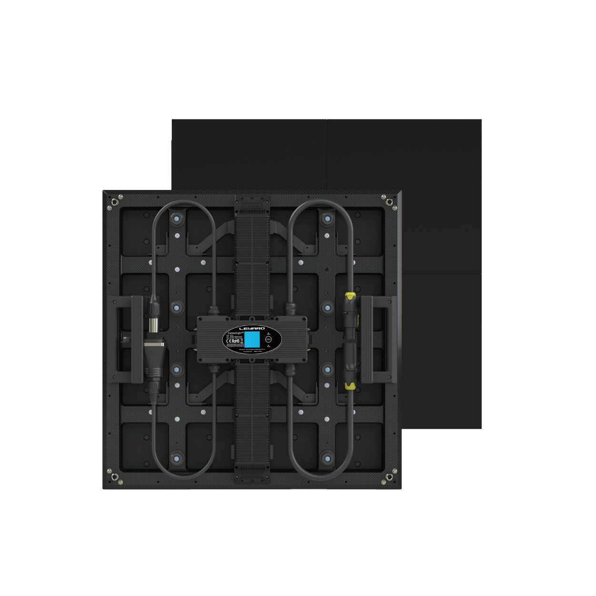
見る ↗フロアLEDディスプレイ足元まで、映像の舞台に。
メーカー製品画像：CLF M2シリーズ 見る ↗屋内透過型LEDディスプレイ
見る ↗屋内透過型LEDディスプレイ背景を透かしながら、映像を重ねる。
メーカー製品画像：Vanish V8S（元型式） 見る ↗屋内LEDパネル
見る ↗屋内LEDパネル薄い画面を組み合わせ、壁面や縦長の映像演出へ。
DP2.6フルサイズの表示面。幅500×高さ1,000mmの縦長パネルです。 見る ↗屋外対応・透過型LED
見る ↗屋外対応・透過型LED背後の光や空間を生かし、大きな映像面を作る。
CLM10M2フルサイズの表示面。幅500×高さ1,000mmで、LEDの列の間から背後が見える構造です。 見る ↗屋外対応・透過型LED
見る ↗屋外対応・透過型LED映像と背景を重ね、舞台全体をひとつの演出に。
CLM10M3の表示面。幅500×高さ1,000mmで、LEDの列の間から背後が見える縦長パネルです。 見る ↗屋内LEDパネル
見る ↗屋内LEDパネル文字も映像も、会場に合わせた画面へ。
CLI3.9 CLTの表示面。正方形の黒いLEDパネルです。 見る ↗屋外対応LEDパネル
見る ↗屋外対応LEDパネル屋外のステージにも、映像を見やすく届ける。
CLO3.9の表示面。正方形の黒いLEDパネルです。 見る ↗屋内外対応LEDパネル
見る ↗屋内外対応LEDパネル大きな映像面を、ステージの構成に合わせる。
CB5フルサイズの表示面。幅600×高さ1,200mmの縦長パネルです。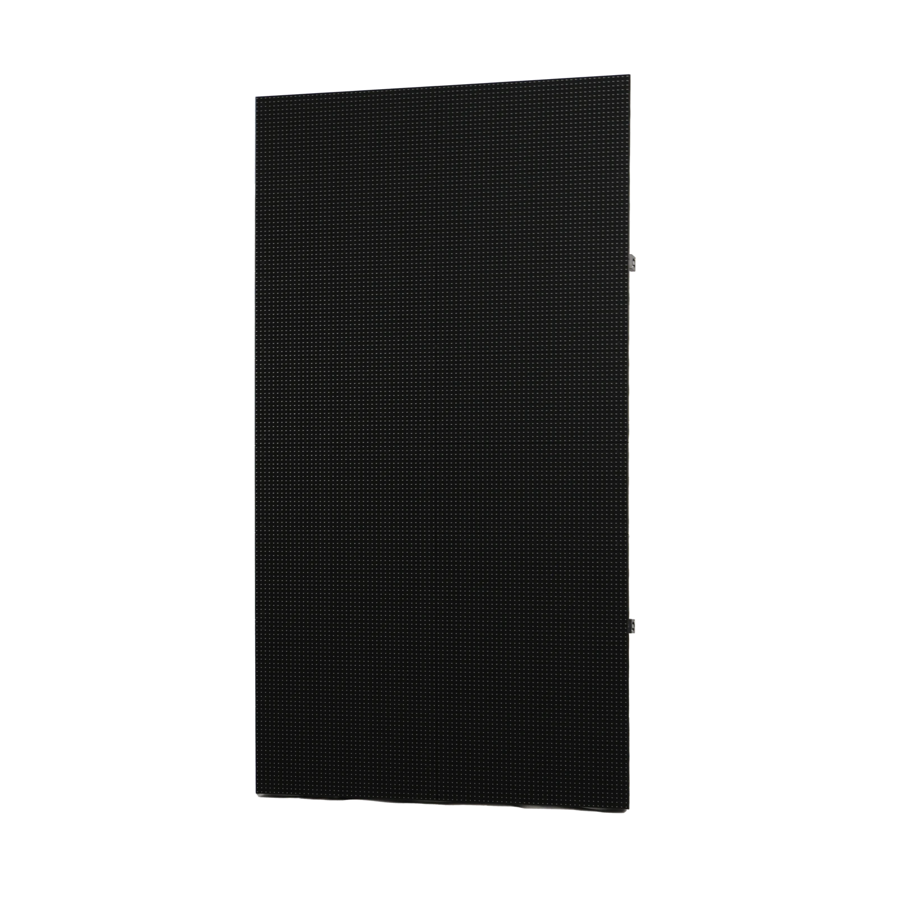
見る ↗屋内LEDパネル高さや曲線を生かして、舞台の映像を組み立てる。
JDI5.9フルサイズの表示面。幅500×高さ1,000mmの縦長パネルです。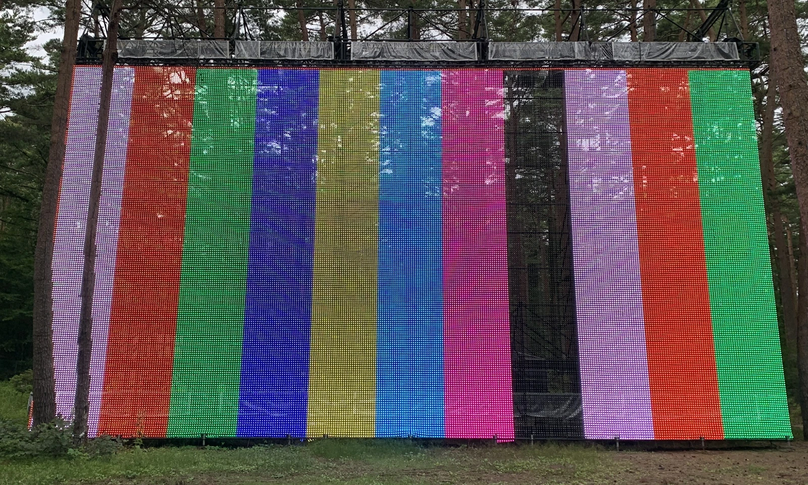
見る ↗屋外対応・メッシュ型LED舞台の奥行きを残し、光の動きを重ねる。
Ecodot-2 P55に色のテスト映像を表示した例。LED面の向こうに背景が透けて見えます。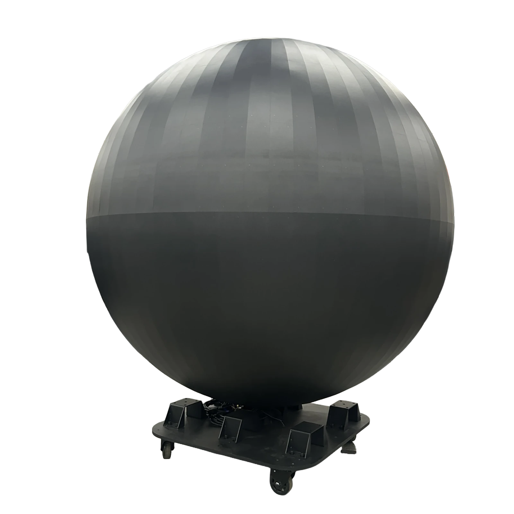
見る ↗球体LEDディスプレイ正面だけでなく、回り込んで楽しむ映像へ。
sphere1800-2.5Gの全体外観。球体とキャスター付きの台が写っています。設置前に、設置担当者が現場の計画に合わせて固定・支持方法を確認します。 見る ↗屋内LEDモジュール
見る ↗屋内LEDモジュール画面を構成する小さな単位まで、正確にそろえる。
メーカー製品画像：INFILED DB2.6pro7項目
 見る ↗プロジェクター
見る ↗プロジェクター会議資料や映像を、スクリーンへ大きく投写する。
概算 57,000円〜／日（税別）メーカー製品画像：PT-VMZ71（白モデル） 見る ↗大型プロジェクター
見る ↗大型プロジェクター大きなスクリーンに、細かな映像を届ける。
概算 840,000円〜／日（税別）メーカー製品画像：PT-RQ25Kシリーズ（レンズ別売） 見る ↗交換レンズ式プロジェクター
見る ↗交換レンズ式プロジェクター画面と設置距離に合わせて、投写の構成を選ぶ。
メーカー製品画像：PT-REQ15シリーズ（レンズ別売）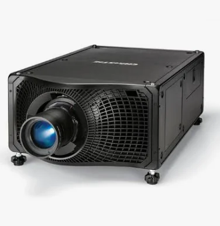
見る ↗大型プロジェクター大きな会場の大きなスクリーンへ、4K の映像を明るく投写する。
メーカー製品画像：Christie Boxer 4K30 見る ↗空間演出プロジェクター
見る ↗空間演出プロジェクタースクリーン以外の場所にも、映像で表情を。
メーカー製品画像：LightScene EV-115（黒色） 見る ↗短焦点ズームレンズ
見る ↗短焦点ズームレンズ奥行きが限られる場所で、投写距離からレンズを選ぶ。
メーカー製品画像：ET-C1W300（交換レンズ単体） 見る ↗短焦点ズームレンズ
見る ↗短焦点ズームレンズW300 より少し離れた位置から、短い投写距離で大きく映す。
製品画像：Panasonic ET-C1W400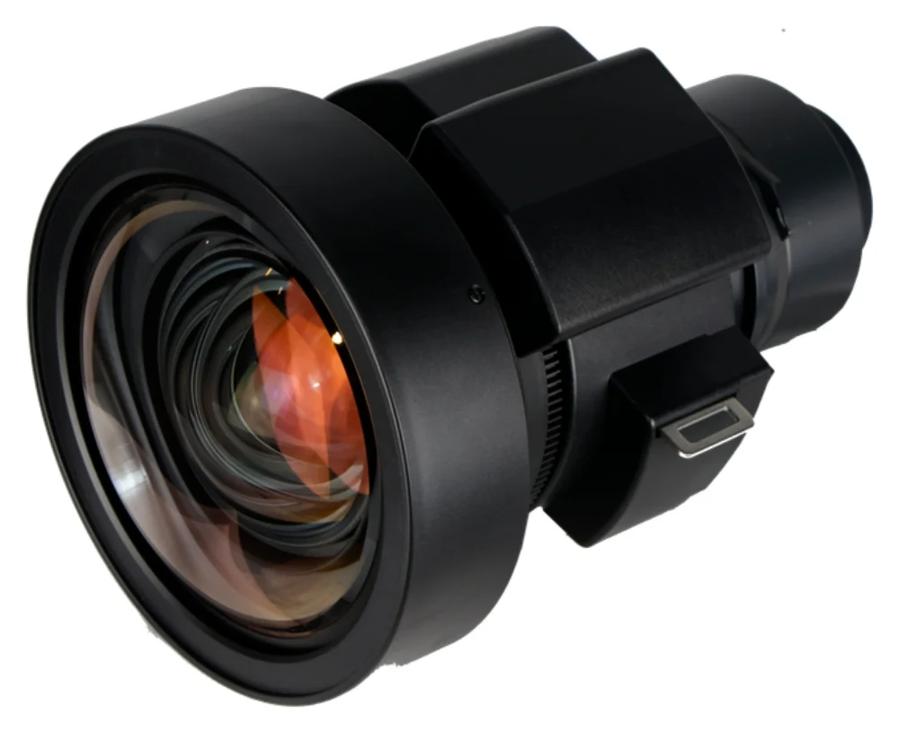
見る ↗短焦点ズームレンズW400 より少し離れた位置から、中くらいの距離で大きく映す。
製品画像：Panasonic ET-C1W500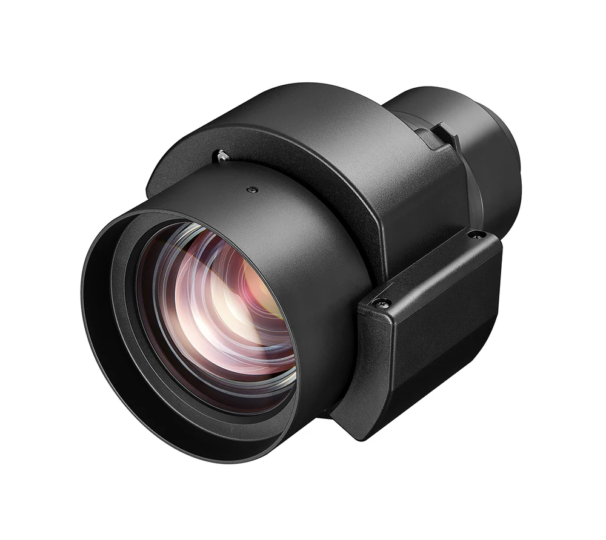
見る ↗ズームレンズ標準的な距離から、画面の大きさを幅広く合わせる。
製品画像：Panasonic ET-C1S600 見る ↗長焦点ズームレンズ
見る ↗長焦点ズームレンズ客席のずっと後ろから、狙った大きさで映す。
製品画像：Panasonic ET-C1T700 見る ↗長焦点ズームレンズ
見る ↗長焦点ズームレンズ大きな会場の最後方から、遠くの画面を狙う。
製品画像：Panasonic ET-C1T800 見る ↗超短焦点投写レンズ
見る ↗超短焦点投写レンズ画面近くから、大きく映す。
メーカー製品画像：ET-C1U100（本体は別途）5項目
 見る ↗確認モニター
見る ↗確認モニター本番へ送る前に、映像を手元で確かめる。
メーカー製品画像：ADTECHNO UH1561S 見る ↗4K 確認モニター
見る ↗4K 確認モニター15.6 型の 4K を、手元でそのまま確かめる。
製品画像：ADTECHNO UH1560 見る ↗映像・信号の確認モニター
見る ↗映像・信号の確認モニター映像と波形を、見比べる。
メーカー製品画像：SmartScope Duo 4K（スコープ表示例） 見る ↗ウルトラワイドPCモニター
見る ↗ウルトラワイドPCモニター横長の画面で、資料も操作も。
メーカー製品画像：LCD-CWQ341SDB-Fシリーズ 見る ↗業務用インフォメーションディスプレイ
見る ↗業務用インフォメーションディスプレイ会場の案内を、明るい画面へ。
メーカー製品画像：PN-P506（設置金具・スタンドは別途）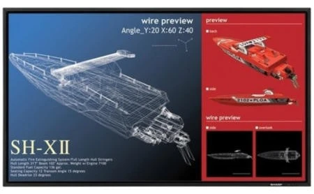
見る ↗業務用インフォメーションディスプレイ55V 型を、細い額縁で並べて大きな案内画面に。
製品画像：SHARP PN-U553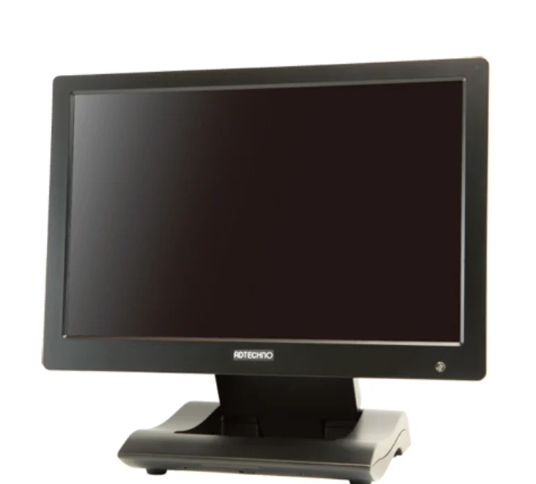
見る ↗10.1型SDIモニター手元で映像を確認しながら、同じSDI信号を次の機器へ。
メーカー製品画像：ADTECHNO LCD1015S2項目
02 / SIGNAL & CONTROL
49項目
 見る ↗スイッチャー
見る ↗スイッチャー資料・カメラ・動画を、進行に合わせて切り替える。
概算 58,000円〜／日（税別）メーカー製品画像：Roland V-160HD 見る ↗LEDプロセッサー
見る ↗LEDプロセッサー入力映像を、LED画面の並びと画素数に合わせる。
メーカー製品画像：Tessera SX40 見る ↗LEDプロセッサー
見る ↗LEDプロセッサー4Kまでの映像を、HDMIや12G-SDIから受けてLEDへ送り出す。
メーカー製品画像：Brompton Tessera S8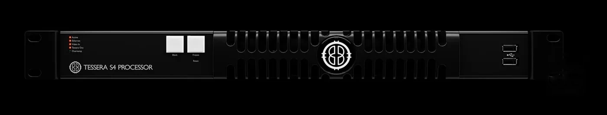
見る ↗LEDプロセッサーフルHDの映像を、LED画面の並びに合わせて送り出す。
メーカー製品画像：Brompton Tessera S4 見る ↗配信AVミキサー
見る ↗配信AVミキサー会場の映像と音声をまとめ、オンラインにも届ける。
メーカー製品画像：Roland VR-120HD 見る ↗映像フォーマット変換
見る ↗映像フォーマット変換異なる映像形式を、受け側の機材に合わせる。
概算 15,000円〜／日（税別）メーカー製品画像：Teranex AV 見る ↗SDIルーター
見る ↗SDIルーターたくさんの映像を、必要な送り先へ。
メーカー製品画像：Videohub 40x40 12G 見る ↗マルチスクリーンプロセッサー
見る ↗マルチスクリーンプロセッサー複数の画面を、ひとつの演出として組み立てる。
メーカー製品画像：Aquilon C+ 見る ↗映像スケーラー
見る ↗映像スケーラー映像の大きさと形式を、出力先に合わせる。
概算 87,000円〜／日（税別）メーカー製品画像：ImagePRO-4K 見る ↗LED映像処理・送出
見る ↗LED映像処理・送出映像を整え、対応するLED画面へ送る。
メーカー前面説明画像：MX40 Pro 見る ↗メディアサーバー
見る ↗メディアサーバー映像素材と進行を、複数の画面へつなぐ。
メーカー製品画像：VX 4+ 見る ↗小型映像変換
見る ↗小型映像変換HDMIとSDIをつなぎ、映像形式をそろえる。
概算 4,000円〜／日（税別）メーカー説明画像：MD-HX（モニターは別機器） 見る ↗HDMI・SDI変換
見る ↗HDMI・SDI変換つなぐ向きに合わせて、変換機を選ぶ。
メーカー製品画像：HA5-12G（HDMI → SDI）見る ↗双方向の光変換SDI映像を光に変えて、離れた場所へ。
メーカー製品画像：Mini Converter Optical Fiber 12G 見る ↗SDIの光伝送
見る ↗SDIの光伝送送信機と受信機をそろえて、映像を遠くへ。
メーカー製品画像：FiDO-T-12G（送信側）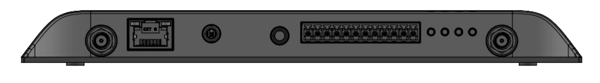
見る ↗サイネージプレーヤー展示や案内の映像を、決めた画面へ届ける。
メーカー技術図：XD236の前面 見る ↗スクリーン管理・映像合成
見る ↗スクリーン管理・映像合成横長の背景と複数画面へ、映像を重ねて切り替える。
メーカー製品画像：Encore3 見る ↗映像・音声の遅延調整
見る ↗映像・音声の遅延調整口の動きと音、画面同士のタイミングを相談する。
概算 5,000円〜／日（税別）メーカー製品画像：VC-1-DL 見る ↗HDMIの光・ネットワーク伝送
見る ↗HDMIの光・ネットワーク伝送離れた画面へ、PCの映像と必要な操作信号を届ける。
メーカー製品画像：NEX-02T/HFシリーズ（送信側）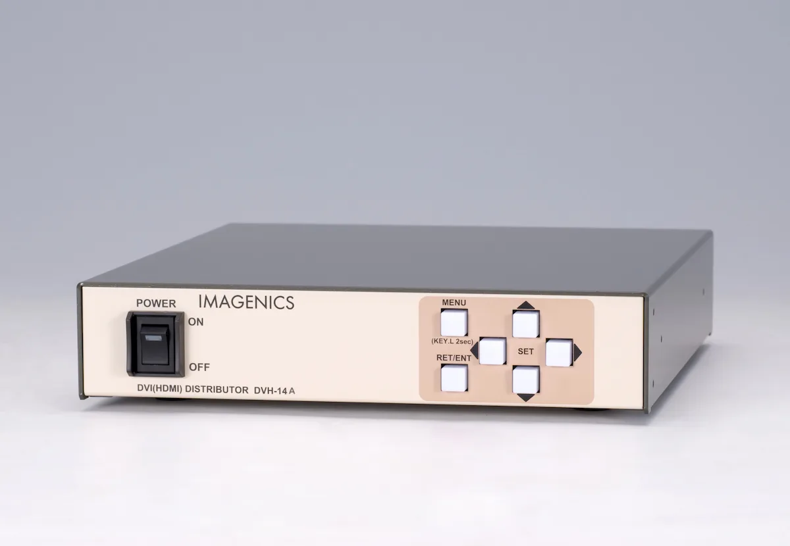
見る ↗DVI・HDMI信号の分配一つの映像を、複数の画面へ同時に届ける。
メーカー製品画像：DVH-14A 見る ↗LEDデータの光伝送
見る ↗LEDデータの光伝送離れたLEDへ、光でデータを届ける。
製品画像：CVT10 Pro-S（シングルモード型） 見る ↗映像のネット配信
見る ↗映像のネット配信SDI映像を、ネット配信へ。
メーカー製品画像：Streaming Encoder 4K（画面は表示例） 見る ↗同期信号ジェネレーター
見る ↗同期信号ジェネレーター同期の基準を、各機器へ。
概算 2,800円〜／日（税別）メーカー製品画像：GEN10 見る ↗映像操作コントローラー
見る ↗映像操作コントローラー画面の切り替えを、手元から。
メーカー製品画像：RC400T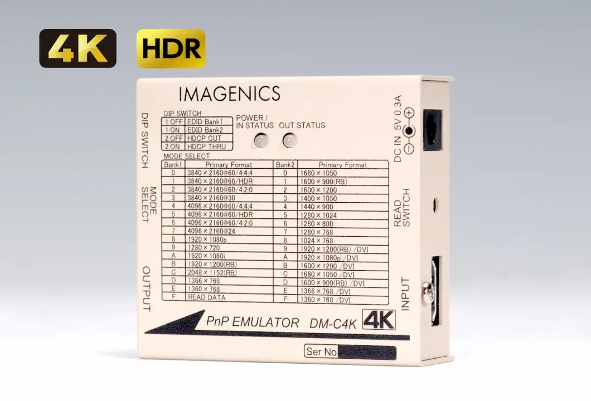
見る ↗EDIDエミュレーター画面の対応情報を、PCへ。
メーカー製品画像：DM-C4K 見る ↗光ファイバHDMIケーブル
見る ↗光ファイバHDMIケーブル離れた画面へ、HDMIで。
メーカー製品画像：HDM**P-A6シリーズ（10m） 見る ↗SDI・Dante音声インターフェース
見る ↗SDI・Dante音声インターフェース映像と音響の、音声をつなぐ。
メーカー製品画像：AVN-DIO10-12G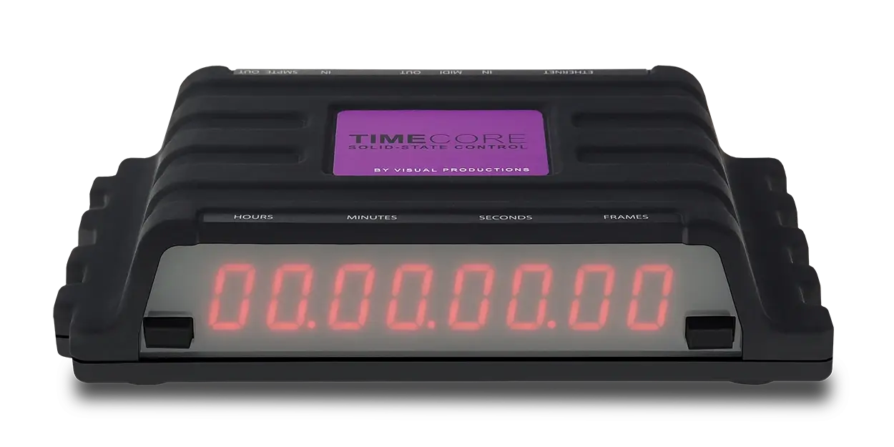
見る ↗タイムコード・ショーコントロール演出の進行位置を、タイムコードで共有する。
概算 10,500円〜／日（税別）メーカー製品画像：TimeCore 見る ↗Dante AV Ultra映像伝送
見る ↗Dante AV Ultra映像伝送映像と音声の送り先を、対応ネットワーク上で構成する。
メーカー製品画像：DAV-02HT（送信側。受信側DAV-02HRは別機器） 見る ↗AVネットワークスイッチ
見る ↗AVネットワークスイッチ映像・音声のネットワークを、会場でまとめる。
メーカー製品画像：GSM4212UX（国内型番 GSM4212UX-100AJS の公式掲載画像） 見る ↗PC遠隔操作・IP-KVM
見る ↗PC遠隔操作・IP-KVMPCを置く場所と、操作する席を分ける。
メーカー製品画像：KX9970T / KX9970R（送信側・受信側は別機器） 見る ↗PTZカメラコントローラー
見る ↗PTZカメラコントローラー離れた操作席から、登壇者を映すカメラを動かす。
メーカー製品画像：Panasonic AW-RP150GJ 見る ↗ワイヤレス映像伝送
見る ↗ワイヤレス映像伝送カメラから離れた確認画面へ、映像を無線でつなぐ。
メーカー製品画像：Hollyland MARS 400S PRO（送信機・受信機） 見る ↗CAT6ケーブル側コネクタ部品
見る ↗CAT6ケーブル側コネクタ部品同じetherCONでも、端子の世代をそろえる。
メーカー製品画像：NE8MC6-MO（組立前の部品構成） 見る ↗SDI分配器
見る ↗SDI分配器ひとつのSDI映像を、会場の複数箇所へ。
製品画像：VIDEOTRON DDA-25HD/SD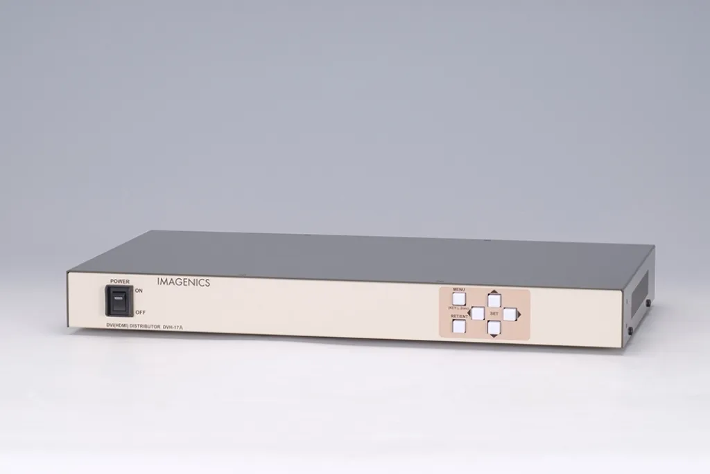
見る ↗DVI／HDMI分配器ひとつの映像を、最大7箇所の画面へ。
メーカー製品画像：IMAGENICS DVH-17A 見る ↗映像スケーラー・信号変換
見る ↗映像スケーラー・信号変換DVI・アナログ・SDIの映像を、表示先に合わせる。
概算 53,000円〜／日（税別）メーカー製品画像：Barco ImagePRO-II Jr 見る ↗映像スケーラー・信号変換
見る ↗映像スケーラー・信号変換映像機器と会場の画面を、つながる形式へ。
概算 53,000円〜／日（税別）メーカー製品画像：Barco ImagePRO-II 見る ↗光ケーブル
見る ↗光ケーブル離れた機器を結ぶ光配線を、型式から選ぶ。
メーカー製品画像：Neutrik opticalCON DUO 見る ↗SDI・HDMI変換
見る ↗SDI・HDMI変換SDIで届く映像を、HDMIモニターへ。表示とSDI中継を1台でまとめます。
メーカー製品画像：Theatrixx xVision SDI2HDMI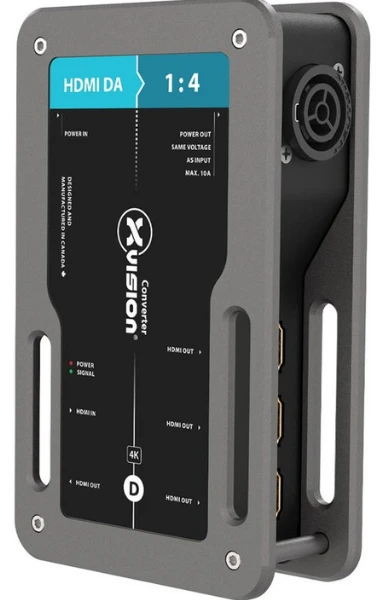
見る ↗HDMI分配器1本のHDMIを、4つの画面へ。
製品画像：Theatrixx XVVHDMIDAT1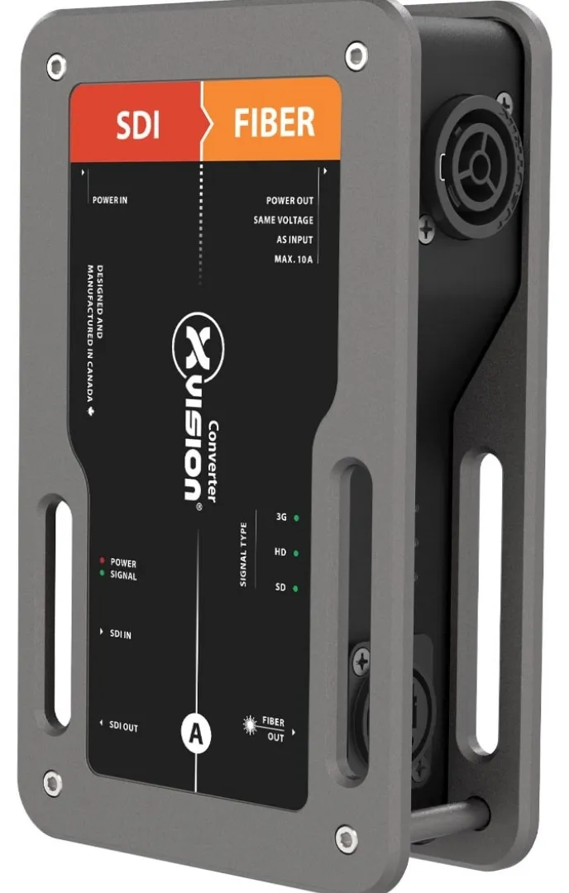
見る ↗SDI光伝送離れたカメラと映像卓を、1系統の光伝送でつなぎます。
メーカー製品画像：Theatrixx xVision SDI2FIBER 見る ↗12G-SDI→光 送信機
見る ↗12G-SDI→光 送信機2系統の 4K 映像を、光で遠くへ送り出す。
製品画像：Theatrixx XVV2SDI2FIBER-12G 見る ↗光→12G-SDI 受信機
見る ↗光→12G-SDI 受信機光で届いた2系統の映像を、SDIに戻す。
製品画像：Theatrixx XVV2FIBER2SDI-12G 見る ↗LEDプロセッサー
見る ↗LEDプロセッサー入力映像を、LED画面の配置に合わせて送り出す。
Colorlight Z5の前面外観。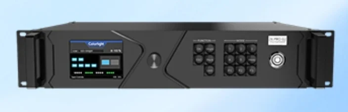
見る ↗LEDプロセッサー4 つの 4K 入力を、大きな LED へ光で送る。
製品画像：Colorlight Z6 PRO-G2 見る ↗LEDプロセッサー
見る ↗LEDプロセッサー複数の4K映像を、大きなLED画面の配置に合わせて送り出す。
製品画像：Colorlight Z8t 見る ↗8K 対応 LEDプロセッサー
見る ↗8K 対応 LEDプロセッサー4K 入力を受けて、8K クラスの大きな LED 画面を動かす。
製品画像：Colorlight CLT-Z8 見る ↗球体・異形 LED コントローラー
見る ↗球体・異形 LED コントローラー球体やリングなど、四角くない LED に 4K の映像を割り付ける。
製品画像：Mooncell B800ES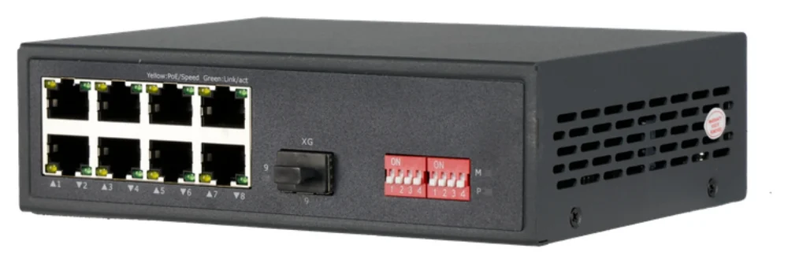
見る ↗LEDデータの光変換器LED 用の LAN 8 本を光ファイバー 1 本にまとめ、最大 20km 先へ。
製品画像：Mooncell FOT08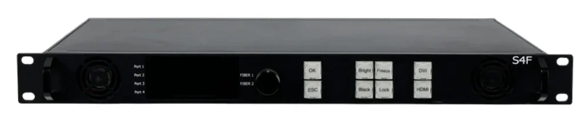
見る ↗フルHD LEDプロセッサーフルHDまでの映像を、4 系統の LAN で LED に届ける。
製品画像：Colorlight CLT-S4F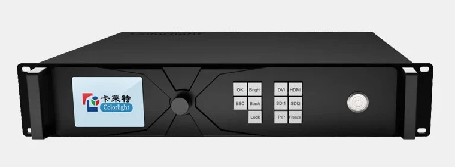
見る ↗4K LEDプロセッサーHDMI・SDI・DVI の映像を受けて、16 系統の LAN で大きな LED 画面へ。
製品画像：Colorlight CLT-Z6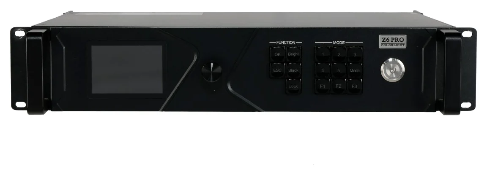
見る ↗4K LEDプロセッサー4 枚の入力カードで受けた映像を、10G の光で大きな LED へ。
製品画像：Colorlight CLT-Z6 PRO 見る ↗LEDデータの光変換器
見る ↗LEDデータの光変換器離れたLEDへ、光の経路からデータを分ける。
H10FN2の端子のない面。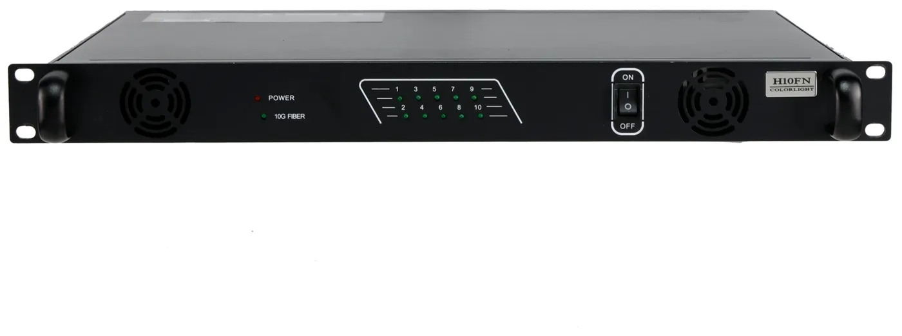
見る ↗LEDデータの光変換器遠くのLEDまで光で運び、10本に分ける。
製品画像：Colorlight H10FN 見る ↗LEDデータの分配器
見る ↗LEDデータの分配器Tesseraの光・銅線経路を、LEDパネルへ分配する。
Brompton Tessera XDの前面外観。 見る ↗HDMI出力カード
見る ↗HDMI出力カード対応プロセッサーから、複数のHDMI画面へ。
メーカー製品画像：R9004792の出力端子面。03 / CAPTURE & MONITOR
10項目
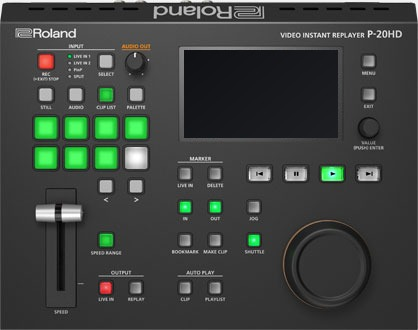
見る ↗リプレイ・録画いまの場面を、もう一度。録画しながらリプレイを出す。
概算 11,500円〜／日（税別）メーカー製品画像：Roland P-20HD 見る ↗収録・再生
見る ↗収録・再生会場の映像を、編集・納品につながるファイルへ。
概算 7,500円〜／日（税別）メーカー製品画像：HyperDeck Studio HD Plus 見る ↗モニター・外部収録
見る ↗モニター・外部収録映像を手元で確かめ、そのまま記録する。
概算 4,300円〜／日（税別）メーカー製品画像：Video Assist 7インチ 12G HDR 見る ↗複数映像の収録
見る ↗複数映像の収録複数のカメラ映像を、別々のファイルで残す。
メーカー製品画像：Ki Pro GO2（記録メディアの使用例）見る ↗PC映像キャプチャー映像を、PCで使える入力へ。
メーカー製品画像：UltraStudio Express Recorder 3G 見る ↗HDMIマルチビューワー
見る ↗HDMIマルチビューワー4つの映像を、1つの画面へ。
メーカー製品画像：HEV-U41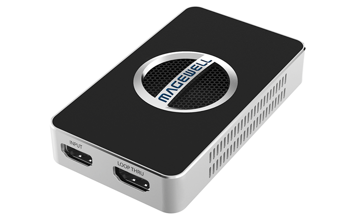
見る ↗USB映像キャプチャーHDMI映像を、PCへ取り込む。
メーカー製品画像：USB Capture HDMI 4K Plus 見る ↗PTZカメラ
見る ↗PTZカメラ登壇者やステージを、離れた操作席から撮影。
メーカー製品画像：Panasonic AW-UE150K（生産完了品）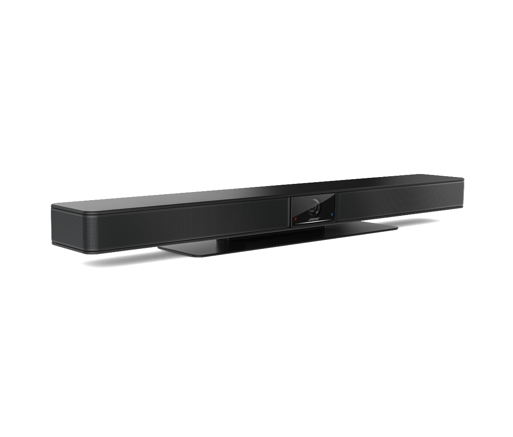
見る ↗USB会議用カメラ・マイク・スピーカー会議室の声と表情を、オンラインの参加者へ。
メーカー製品画像：Bose Professional Videobar VB1（卓上スタンド装着） 見る ↗映像信号の試験・簡易解析
見る ↗映像信号の試験・簡易解析試験映像を送り、戻ってきた信号を確かめる。
製品画像：X_TS_mini04 / OPERATIONS
8項目
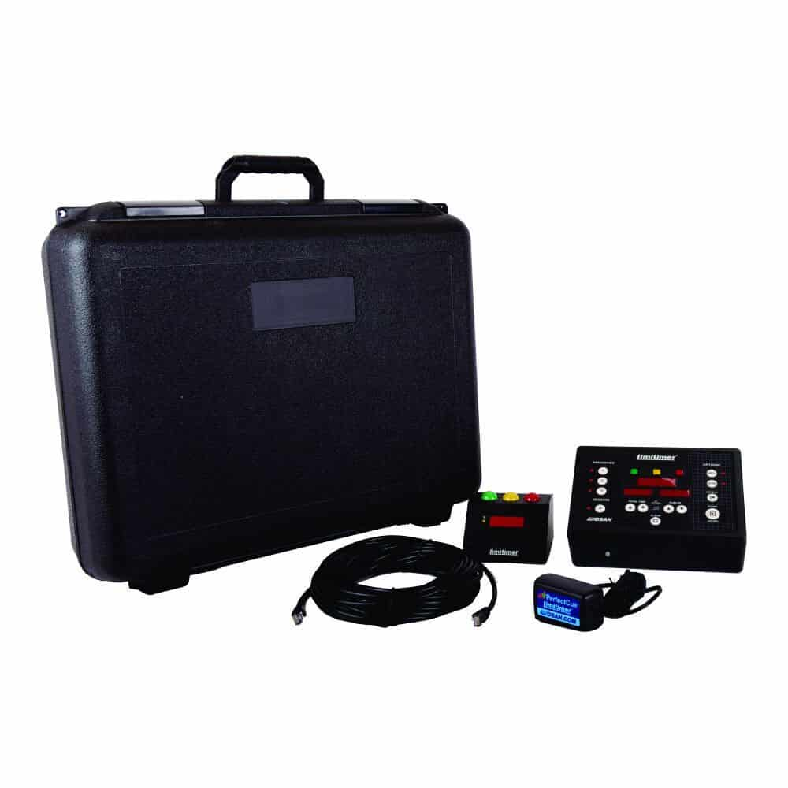
見る ↗講演者用タイマー残り時間を、話している人へ伝える。
メーカー製品画像：Limitimer PRO-2000-PLUS（メーカー標準セット例） 見る ↗スタッフ連絡・ワイヤレスインカム
見る ↗スタッフ連絡・ワイヤレスインカムカメラ側と操作席で、声をかけ合う。
メーカー構成画像：Solidcom C1 Pro-6S（6人用・ハブなし）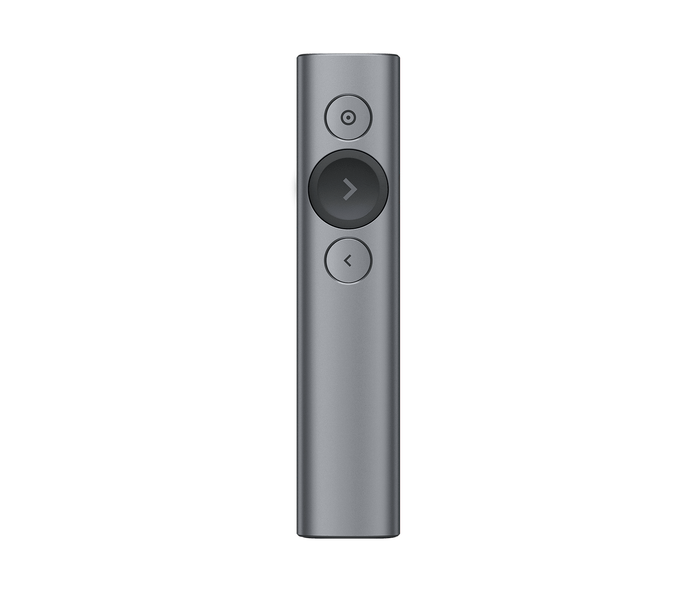
見る ↗プレゼンテーションリモコン登壇者の手元でスライドを送り、画面の注目点を示す。
メーカー製品画像：Logicool Spotlight R1000SL（スレート）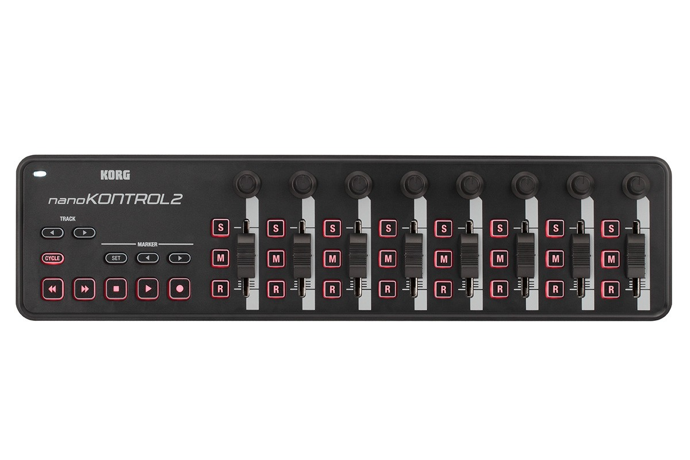
見る ↗USB MIDIコントローラー対応ソフトの操作を、手元のフェーダーやボタンに割り当てる。
メーカー製品画像：KORG nanoKONTROL2（ブラック） 見る ↗電源コネクター
見る ↗電源コネクター電源を受ける側・送る側の端子を、型番で確認する。
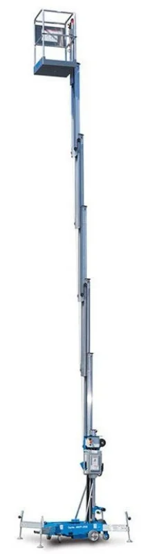
見る ↗高所作業台天井近くの作業へ、1 人で安全に上がる。
製品画像：Genie AWP-30S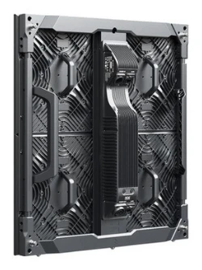
見る ↗LEDの設置部材DM2.6 を、吊る・積む・つなぐ。
メーカー製品画像：ROE Visual Diamond 見る ↗ケーブルプロテクター
見る ↗ケーブルプロテクター通路を横切るケーブルを 5 本の溝にまとめて覆う、床置きのプロテクター。
製品画像：Checkers Yellow Jacket 5ch YJ5-125機種・数量・料金は、日程と用途を伺ってご案内します。
← 映像機材レンタルへPLAN & ESTIMATE
画面の種類と大きさを選ぶと、LED の枚数・重さ・消費電力の目安と、必要な機材が並びます。金額が決まっていなくても大丈夫。組んだ内容は、そのまま相談に使えます。
LED ビジョン画面を選ぶと、枚数とサイズを表示
税別小計見積相談
42kVAトランス・電源BOX・レール・カーゴ・黒幕・スライダーも、用途から探せます。
周辺機材の案内を見る ↗機材の役割と、現場で担当した仕事を見比べられます。
用途を伝えていただければ、合う機材をこちらで選びます。
LET’S TALK
技術提供と映像機材レンタル。ご希望に合わせて、担当範囲を整理します。